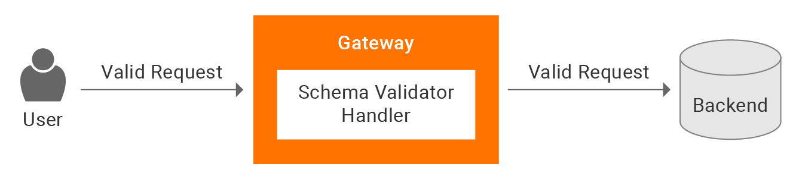
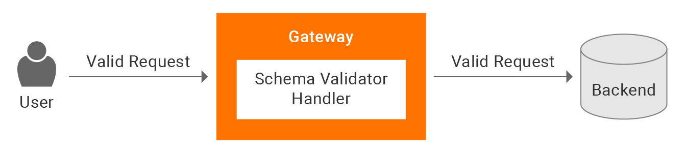

I am a dedicated and enthusiastic individual with a deep passion for Software Engineering and Data Science. I am driven by the opportunity to solve complex problems and create innovative solutions through coding and data analysis. My journey in the field of technology has fueled my curiosity and motivation to continuously learn and grow. With a strong foundation in software engineering principles and a keen interest in data science techniques, I strive to combine my skills to develop intelligent and efficient applications. I am constantly exploring new technologies and staying up-to-date with the latest trends in the industry to enhance my knowledge and broaden my expertise. I am excited to collaborate on challenging projects and contribute to the advancement of software engineering and data science domains
 

I have developed a JSON schema validator using Go programming language. This validator serves as a robust tool for validating JSON data against a predefined schema. It employs the gojsonschema library to parse the JSON schema file and perform validation on incoming JSON requests. Upon receiving a request, it reads the JSON schema file, validates the JSON request against the schema, and provides a response indicating the validity of the request. Valid requests are stored in a MongoDB database for further processing and analysis. With this JSON schema validator, I ensure the integrity and accuracy of JSON data within my applications, enabling seamless integration and data validation.
This project aimed to analyze the sentiments and emotions expressed in tweets related to COVID-19. Using advanced techniques like LDA topic modeling and DistilRoBERTa, I achieved an impressive 87% accuracy in sentiment classification. Additionally, I successfully identified the dominant emotions of happiness, sorrow, and fear within these tweets.
The proposed model would assess a patient’s risk along with detecting warning symptoms based on multiple parameters. While working on this, I got the opportunity to use Python libraries inclusive of Matplotlib, Seaborn, and Pandas. For the model, we were exposed to Python Programming Language in Jupyter Notebooks, an open-source software. I was able to apply several Machine Learning Algorithms like Decision Trees, Random Forest, K-Nearest Neighbors, Neural networks and compare their respective results.

I focused on building a machine learning model to predict house prices. Leveraging the Kaggle dataset, I employed the Random Forest algorithm for classification and prediction tasks. Through iterative refinement and evaluation using metrics such as mean squared error (MSE), root mean squared error (RMSE), and R-squared, I achieved a model accuracy of 85%. Moreover, the utilization of Random Forest reduced prediction generation time by 25%.

I actively engaged in data preparation, cleaning, and exploratory data analysis focused on sports data. By utilizing statistical and visualization techniques such as Box Plots, Scatterplots, and Bar graphs, I effectively communicated complex findings and insights to stakeholders. The discovered key trends and patterns led to a significant 20% improvement in business processes.
I took the lead in developing a decentralized electronic voting system powered by the Ethereum Blockchain. The project aimed to enhance the security and transparency of the voting process. The implementation of application features and interfaces, along with the maintenance of both client and server-side applications, led to a significant 30% reduction in system downtime. We were able to revolutionize the voting experience, providing a more secure, transparent, and reliable platform.